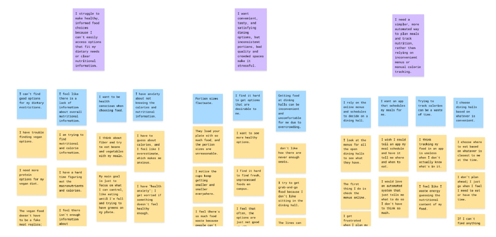
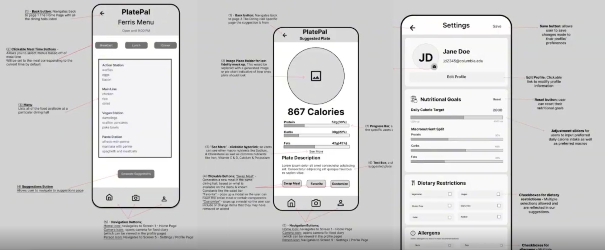

I led design on PlatePal (a personalized campus dining recommendation app) from first research session through shipped product. My focus was the full design system and the Settings and Profile screen, the place where trust is built before a student ever opens a menu.
"Every time I eat, I am doing mental gymnastics to figure out where this plays in. Concrete numbers would be a lot better than this guessing game."Contextual inquiry participant / Columbia student

Themes from contextual inquiry: dietary access gaps, nutrition info anxiety, portion inconsistency, convenience vs. health tension, automation desire
Before opening Figma, we manually texted personalized meal recommendations to participants three times a day. The finding was clear: messages that referenced a person's stated preferences by name drove dramatically higher satisfaction than generic suggestions. That single result shaped every screen.
"The personalized messages to my phone were extremely useful."Participant / Smoke-and-mirrors test
User Flow
Student flow: set preferences → browse menu → get personalized suggestion
Personalization drove satisfaction in smoke-and-mirrors testing. Trust built in Settings before a single recommendation.

"Sometimes I plan my meal and it is not what the website says." Kaylie stopped trusting tools after one bad experience of arriving to find her planned dish gone.
Selenium + BeautifulSoup scraping pipeline refreshing menus every 30 minutes. A real-time student reporting feature lets users flag dishes that have run out.
Smoke-and-mirrors test: when messages took too long to get to the point, users wouldn't read them.
A simplified view version with only the dining hall name and if it's open and a minimalistic menu screen to avoid information overload
"I have anxiety about not knowing the calories and nutritional information." Students wanted data they could see and verify.
USDA FoodData Central estimation layer to approximate macros where Columbia Dining data was missing. Every suggestion shows its numbers, not just its name.
"The personalized messages to my phone were extremely useful."Participant / After smoke-and-mirrors test
Owning the design process taught me that trust is built before a student ever opens a menu. If the first screen feels confusing or permanent, the whole system loses credibility. Getting one screen right mattered as much as the recommendation algorithm.